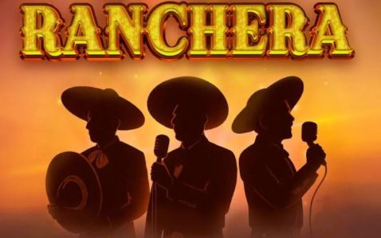
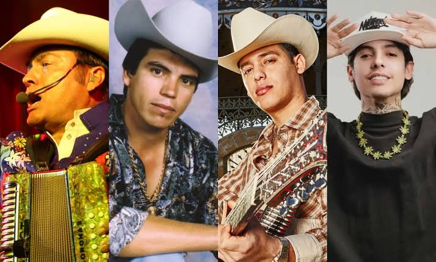
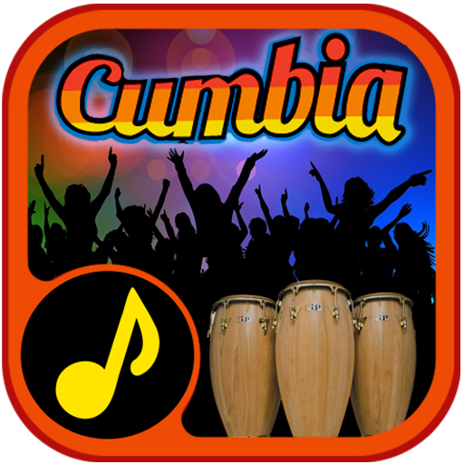
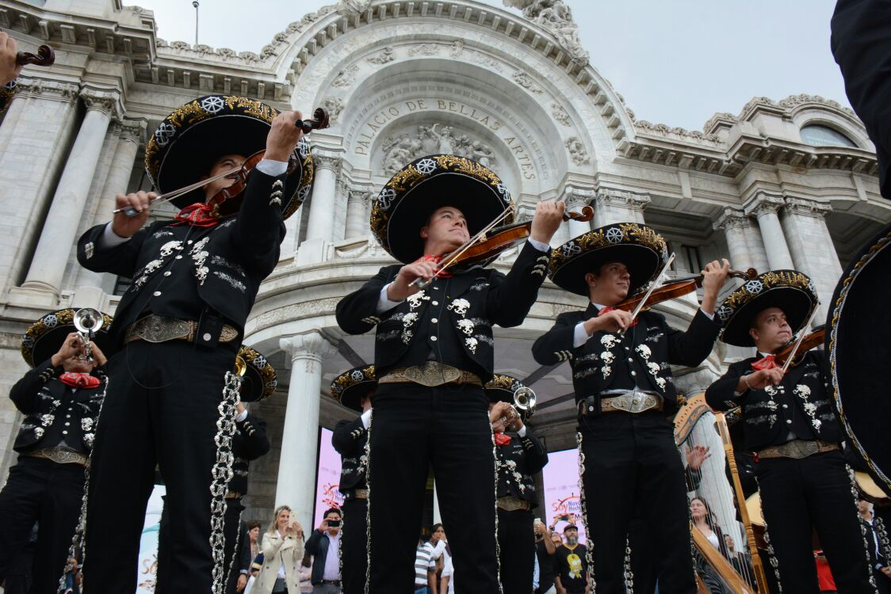

|
|---|
¿ Qué imaginas al escuchar la frase “ música mexicana ”? Probablemente tenga alguna idea de cómo suena, o incluso cómo se ve. Puede que le vengan a la mente guitarras con cuerdas de nailon, letras románticas en español y cantantes con sombreros grandes y elegantes, ¡y no se equivoca! Estas son sin duda señas de identidad muy importantes de la música mexicana . |
|
|---|---|
RANCHERAS Basándose en la música folclórica tradicional, las rancheras se originan en ranchos en el campo de México. Las rancheras se tocan con instrumentos acústicos, y los tonos largos y prolongados del cantante suelen ir acompañados de violines y trompetas. Son un ícono inconfundible de la cultura mexicana. Escritas con temas de amor, patriotismo y naturaleza, las rancheras son conocidas por rebosar de emoción cruda, ya sea feliz o triste. |
 |
CORRIDOS La palabra corrido en realidad no se refiere a un género musical, sino a su contenido. El corrido es casi como un poema, formando una narrativa musical que entreteje viejas leyendas e historias de amor en una balada. Siempre cuenta una historia. Alcanzaron popularidad particularmente durante la Guerra de Independencia de México y la Revolución Mexicana, romantizando figuras patrióticas de la época. Todavía son increíblemente populares hoy en día, ahora se usan para contar historias sobre, bueno, ¡cualquier cosa! Los corridos tradicionalmente tienen letras en español , pero han sido adoptados por músicos de todas las culturas. |
 |
CUMBIA Si bien la cumbia es de origen colombiano, el género realmente comenzó a despegar a mediados del siglo XX . Los mexicanos amaban tanto la cumbia que se formaron múltiples subgéneros completamente únicos a partir de su popularidad, siendo el más famoso la cumbia sonidera. Caracterizada por su uso icónico de la guacharaca (un instrumento de percusión), la cumbia sonidera (también conocida como cumbia mexicana) es ahora una parte intrínseca de la cultura mexicana. |
 |
BANDA La música de banda se originó en el centro y sur de México y data de mediados del siglo XIX . Este género se caracteriza por su uso intensivo de instrumentos de metal (como la tuba y la trompeta), junto con una percusión fuerte y retumbante. Los acordeones también son comunes. El ritmo clásico de la música de banda es un derivado de la polka alemana, ya que México vio una ola de inmigrantes alemanes en el siglo XIX. |
|
MARIACHI Contrariamente a la creencia popular, el mariachi no se refiere a un género musical, sino al conjunto que lo toca. Los grupos completos de mariachi tienen al menos doce integrantes y consisten en violines, trompetas, guitarras, vihuelas y guitarrones . Es común que los miembros se turnen para cantar las voces principales y de respaldo. Los mariachis tocan muchos tipos diferentes de música mexicana , incluidos los mencionados anteriormente. Son fácilmente reconocibles por sus intrincados atuendos y sombreros de charro. |
 |
POP MEXICANO México siempre ha producido música pop, pero su popularidad creció a nivel mundial en la década de 1990 gracias a artistas como Luis Miguel y Thalia. Quizás el artista más icónico fuera de México, Juan Gabriel es aclamado en todo el mundo por su habilidad para escribir canciones, sus sentidas letras en español y su capacidad para interpretar un conjunto diverso de estilos que incluyen folk pop, ranchera,bolero, pop clásico, mariachi y banda. La rica historia y tradiciones de la cultura mexicana continúan inspirando a los artistas pop hasta el día de hoy. Músicos como Mon Laferte y Natalia Lafourcade son conocidos por asentir a su herencia mexicana. Mediante el uso de imágenes culturales clásicas y la influencia de muchos de los estilos enumerados anteriormente, demuestran que el legado de la música mexicana es una hermosa tradición que sigue dando. |
.jpg) |
.
}